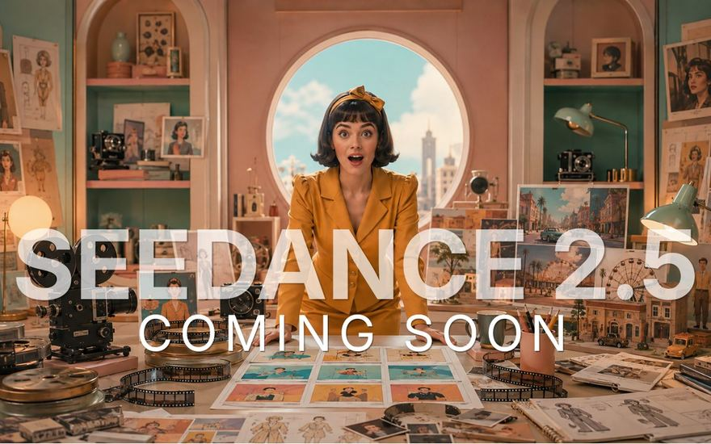
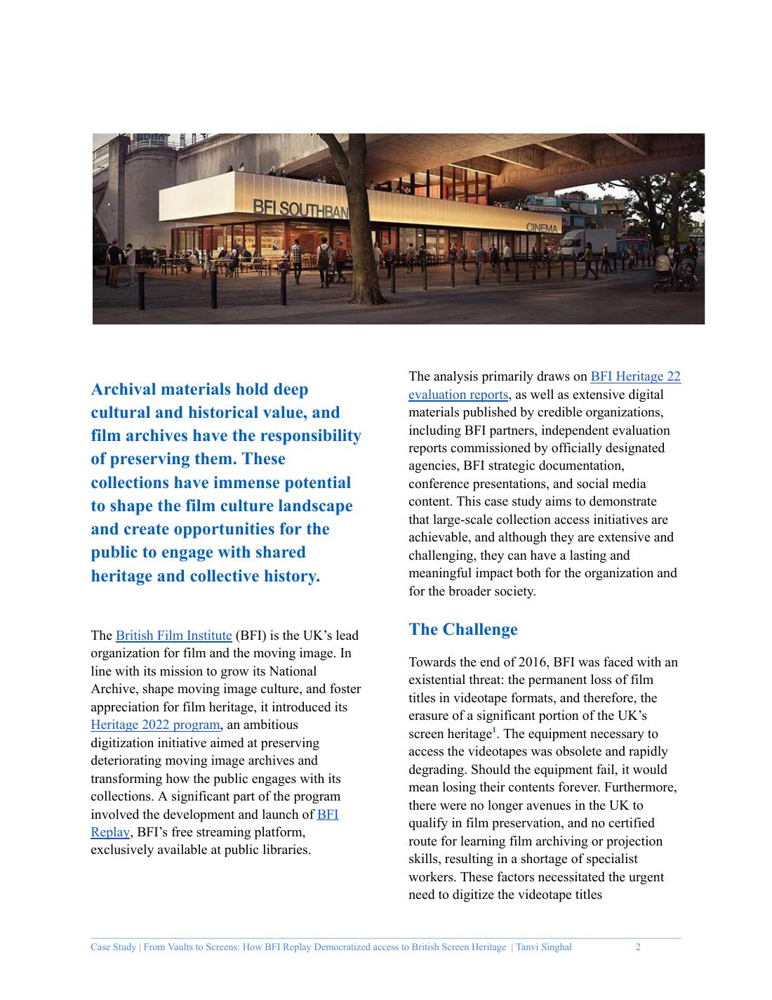
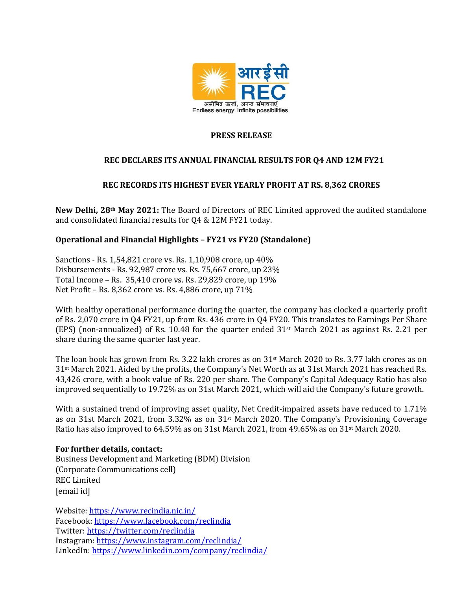
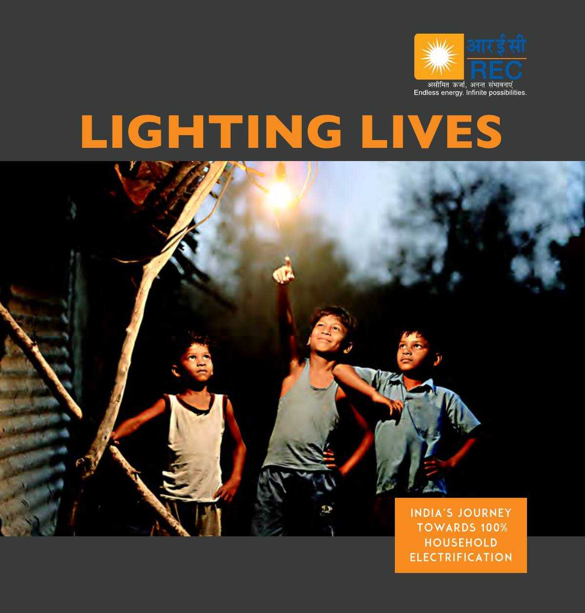
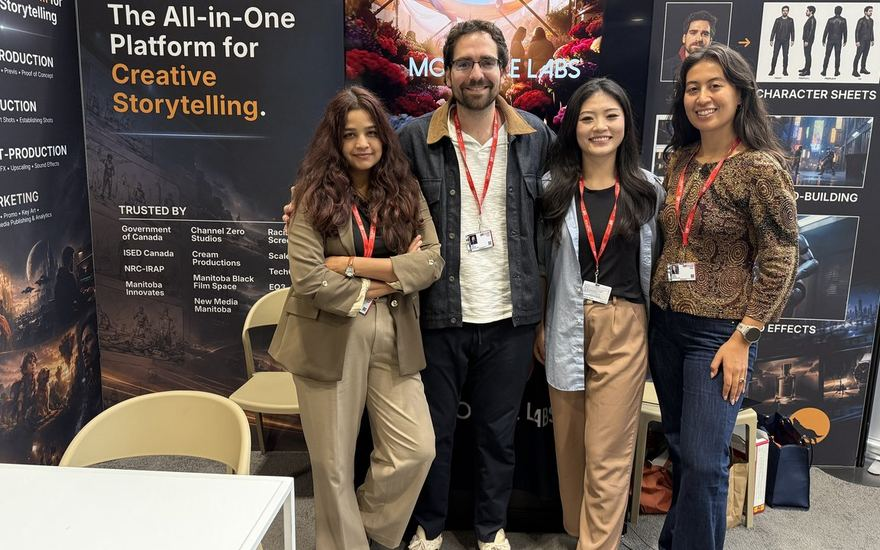

Responsible AI chatbot deployment
Seven considerations for communicators developing customer-facing AI chatbots, including brand voice, privacy, trust and human oversight.
- Thought leadership
- Technology & digital
Selected articles, executive communications, research-led publications, press releases and public-interest writing. Each sample includes context about my contribution and a link to the original work.
Showing all 12 samples
Original writing, research, editorial work and published communications.
Seven considerations for communicators developing customer-facing AI chatbots, including brand voice, privacy, trust and human oversight.

An 88-page corporate history connecting five decades of REC with developments in India’s power sector.

An analysis of AI video capabilities and their implications for how filmmakers plan, generate and refine scenes.

A research case study examining how BFI Replay expanded public access to British screen heritage through local libraries.

A publication bringing REC Foundation’s programmes together through a clear structure and accessible accounts of their social purpose.

A Board-approved financial results announcement presenting key earnings and financial indicators for business media and investors.

Beneficiary stories and programme evidence that put the everyday impact of household electricity at the centre of public communications.

Speaker positioning and a conference abstract connecting the founder’s background in art and technology to the company’s purpose.
Additional examples of financial communications, executive messaging and company storytelling.

A full AGM speech distilled into an investor-focused newspaper feature using selected messages, financial data and imagery.

A capital markets announcement presenting the transaction’s key terms and relevance to financial and international media.

An event recap bringing together creator conversations, demonstrations, partner showcases and media engagement.

A corporate profile covering REC’s lending, renewable energy commitments and financial position.